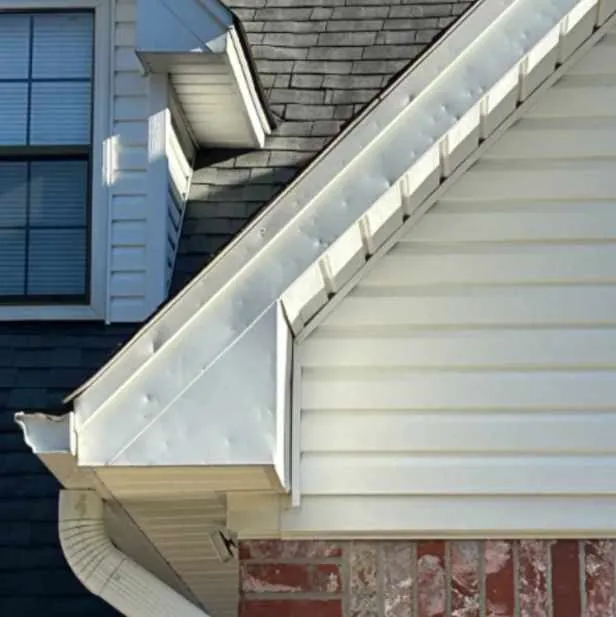
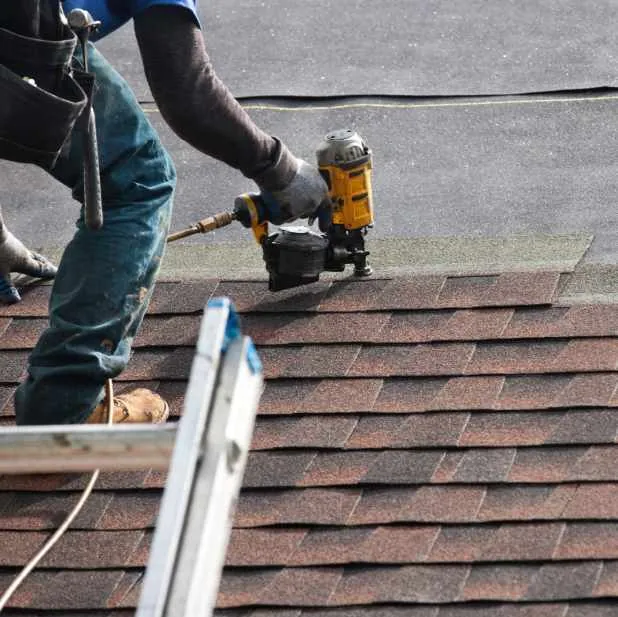

After a recent storm in Cabot, AR, I contacted EZ Roofing for storm damage roof repair. Their team quickly inspected my home, documented the damage, and helped me file an insurance claim. The roof was repaired safely and efficiently, and I also received a free roof inspection to make sure my home was fully protected.
How Did My Roof Get Damaged During the Storm in Cabot, AR?
Last spring, Cabot experienced severe winds and hail, which hit my neighborhood hard. I live in a single-story brick home with asphalt shingles, and after the storm, I noticed a few missing shingles and small dents from hail. At first, I thought it was minor, but water started pooling near the edges of the roof, which made me worry.
I knew I needed a professional opinion because storm damage is often tricky. Some shingles looked intact, but there could be cracks or lifted edges that aren’t visible from the street or even from the roof without a careful inspection.
Why I Contacted a Local Roofing Company for Storm Damage Roof Repair
I reached out to EZ Roofing in Cabot because they specialize in storm damage roof repair and have experience handling insurance claims. I wanted someone who would check the entire property, not just my roof, and provide a realistic assessment. The last thing I wanted was to patch a problem and discover leaks months later.
EZ Roofing offers a free roof inspection, which I scheduled immediately. They confirmed the damage was more extensive than it looked, including lifted shingles and minor hail impact on the gutters and siding. Their professional evaluation gave me peace of mind and helped me prepare for the next steps with my insurance company.
What Did EZ Roofing Do to Repair My Roof?
EZ Roofing’s team arrived within a few days after scheduling. They inspected my roof in person, checking every shingle, the slope of the roof, and surrounding features like gutters, fascia, and soffits. They used drone footage to identify areas of damage that were not easily visible.
Once the inspection was complete, they documented the damage in detail for my insurance claim. The team explained which parts of my roof could be repaired and which required full replacement. They helped me file the insurance claim and coordinated with the adjuster to make sure all damages were accounted for.
When it came to the repair, they removed the damaged shingles and installed new ones to match my existing roof. They also replaced damaged flashing and ensured that all gutters and downspouts were functioning properly. The project took about three days, and I could see the difference immediately. The roof looked as good as new, and I didn’t have to worry about leaks during the next rain.
How Much Did the Storm Damage Roof Repair Cost in Cabot, AR?

Storm damage repair can vary depending on the size of the roof and the extent of the damage. In my case, EZ Roofing estimated a range of $3,500–$6,000, which included materials, labor, and filing the insurance claim.
The entire process, from inspection to completed repairs, took roughly a week, including coordinating with my insurance adjuster. The timing was important because spring in Cabot often brings more storms, and I wanted to prevent further damage.
How Often Should I Schedule a Free Roof Inspection in Cabot, AR?
Scheduling annual inspections is key. Even without visible storm damage, Arkansas weather can cause wear that isn’t easy to spot. EZ Roofing recommends getting a free roof inspection at least once a year to catch minor issues before they become larger problems.
Can Insurance Cover a Roof Replacement After a Storm?
Yes, in many cases, your homeowner’s insurance will cover storm damage if the damage meets policy requirements. EZ Roofing guided me through this process, documenting all damage, filing the claim, and meeting the insurance adjuster on-site. This made sure I received the coverage I was entitled to for repairs or replacement.
What Are Common Signs That My Roof Needs Immediate Attention?
- Missing, cracked, or curled shingles
- Dents from hail or debris
- Leaks or water stains inside the home
- Shingle granules in gutters after heavy rain
EZ Roofing inspected all of these areas during my free roof inspection to prevent surprises.
Why Choose EZ Roofing in Cabot, AR?

EZ Roofing stands out because of its local expertise and commitment to homeowners. They operate in Arkansas and Utah, but their Cabot staff understands local weather patterns, roofing materials suitable for our climate, and insurance processes.
They offer additional services like siding and window services, which is helpful if storm damage affects more than just the roof. Their team is fully licensed, bonded, and insured with over $2 million in coverage, which gave me confidence that the work would be done safely and professionally.
EZ Roofing also provides a 5-year workmanship warranty and supports customers with a 24/7 warranty hotline, so help is available if any issues arise after repairs.
Protect Your Home with Expert Storm Damage Roof Repair in Cabot, AR
If your home in Cabot, AR, was impacted by a storm, contact EZ Roofing for storm damage roof repair. Their team can provide a free roof inspection, document damage for your insurance, and restore your home safely and efficiently.
Don’t wait for leaks or further damage. Get a free roofing inspection today and make sure your roof and exterior are fully protected. Schedule online or call their Cabot office to have a local expert evaluate your property and guide you through repairs or replacement.